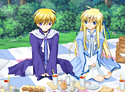

【ギャラクシーエンジェル】
ヴァル・ファスク”に追われているところをエルシオールに助けられる姉弟の姉。性格はいたって温厚で線の細い印象が強い。
●CV：猪口有佳
●What's ルシャーティ
――ゲームサイド
エターナルラヴァーズにて初登場。皇国の英雄と称えられるタクトの噂を聞いて、“ヴァル・ファスク”のもとから脱出してきたらしいのだが…。「ギャラクシーエンジェル EternalLovers」の物語の重要な事実を知るキーパーソンの一人。

© BROCCOLI